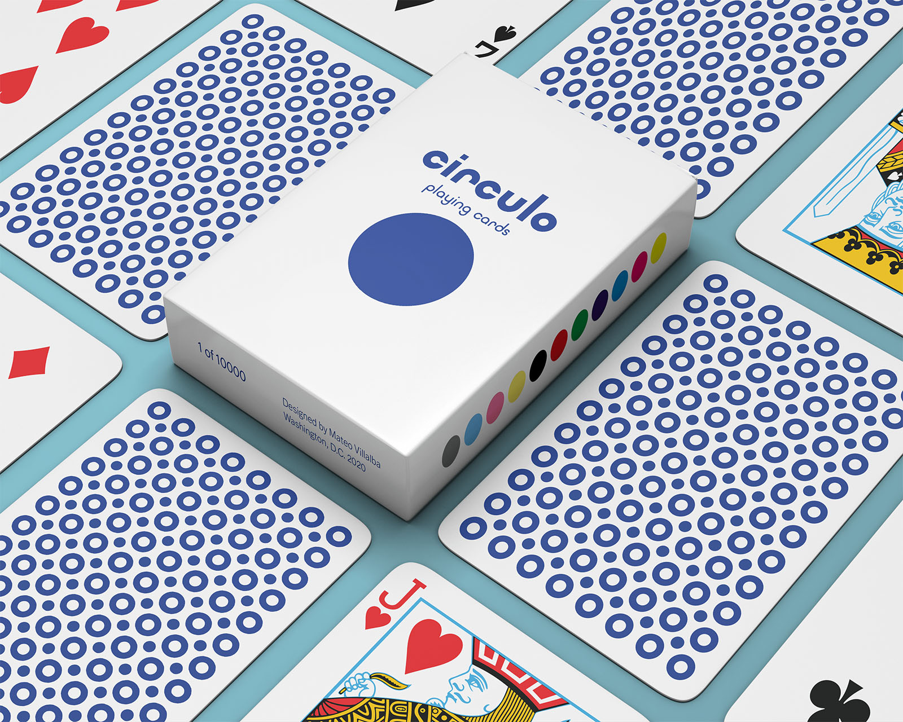
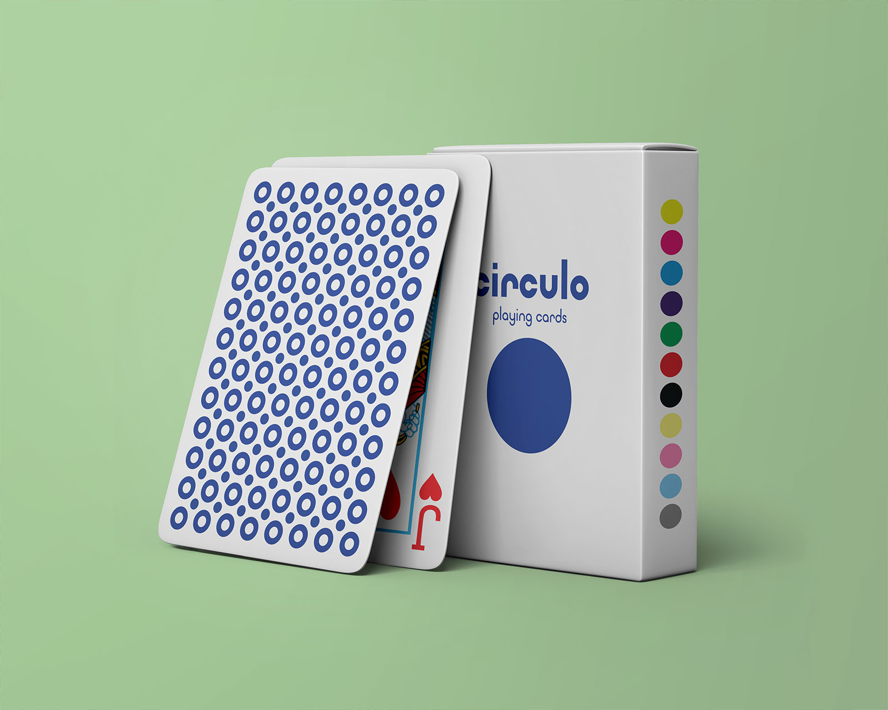

Circulo Playing Cards
November 2020 – Visual Identity & Print Design

I created Circulo Playing Cards for cardistry – a physical art relating to the performance of card flourishes. Contrasting from magic, cardistry focuses on the visual impressiveness and difficulty of specific flourishes. The cards have a simple design with a pattern of repeating full and hollowed circles. When in use, the contrast between the circles highlights the movement of a flourish, adding to the visual aspect of a cardistry performance.
While they are visually interesting, I did not choose to print the Circulo design because I felt it did not contain the vibrance I wanted for cards used for cardistry.
